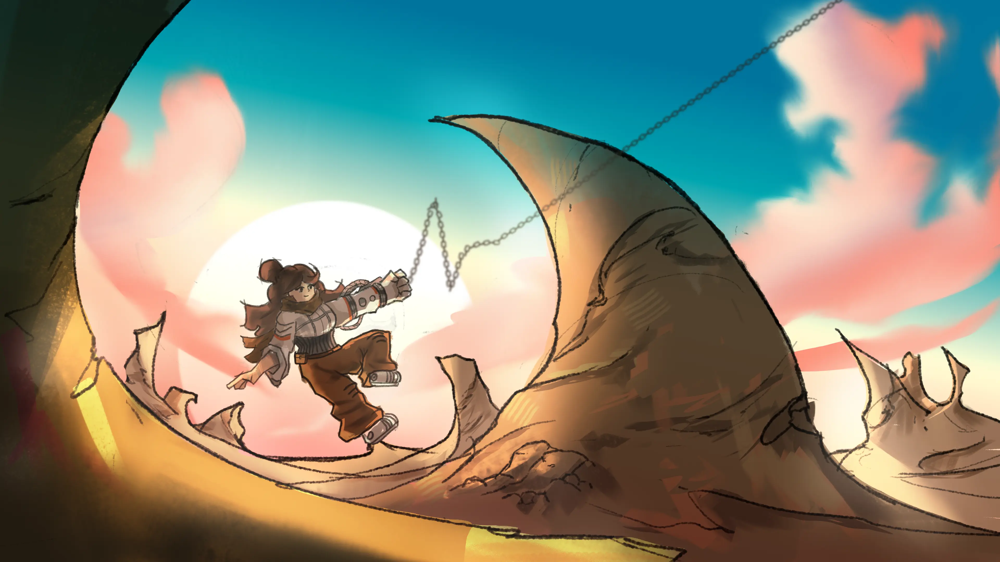
My Concept Art project for an RMIT University elective - the project centers around exploring world-building
for a hypothetical game. The concept revolves around the protagonist who has been stranded on an alien
planet.
The world draws inspiration from retro-futurism and science fiction elements - with the
character drawing reference from '60s and '70s astronaut and cosmonaut suits. Meanwhile the environment is an
unforgiving overrun alien planet that is dominated by fungal lifeforms. The environment has been infested with
an unknown foreign black root that corrupts the local flora to be hostile to the protagonist. The goal for the
player is to escape and find resources to power their vehicle - an upgraded Vespa scooter.
Photoshop
CONCEPT ART
DIGITAL ILLUSTRATION
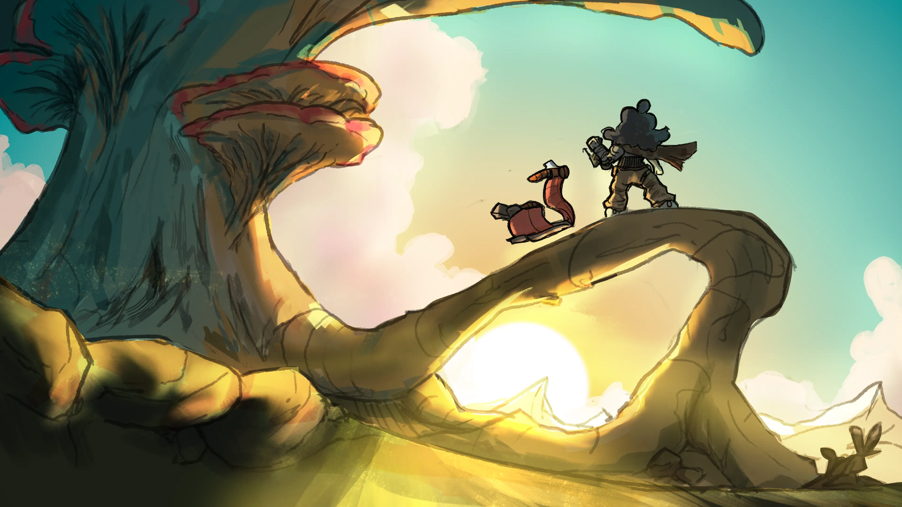
The world is dominated by huge fungus life that inhabits the surface - massive branching mushroom trees encapsulate the top-side of the world. Here, different types of flora has taken dominance over the world and this is reflected through inspiration being taken from coral and prototaxites for the flora on the surface.
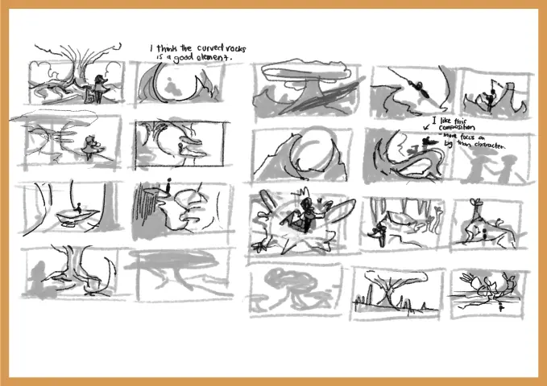
Key Art PlanningThumbnail sketches and rough drafts of the two final key arts. Various thumbnail sketches were made and settled on two of them for the composition.
The key arts were illustrated in Photoshop.
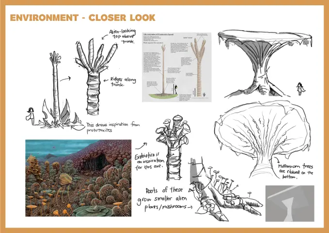
Exploring FloraThe flora in this world consists of fungus-like lifeforms and draws inspiration from Exobiotica, corals and all types of fungus. This helps achieve the otherworldly and alien feel to the planet.
">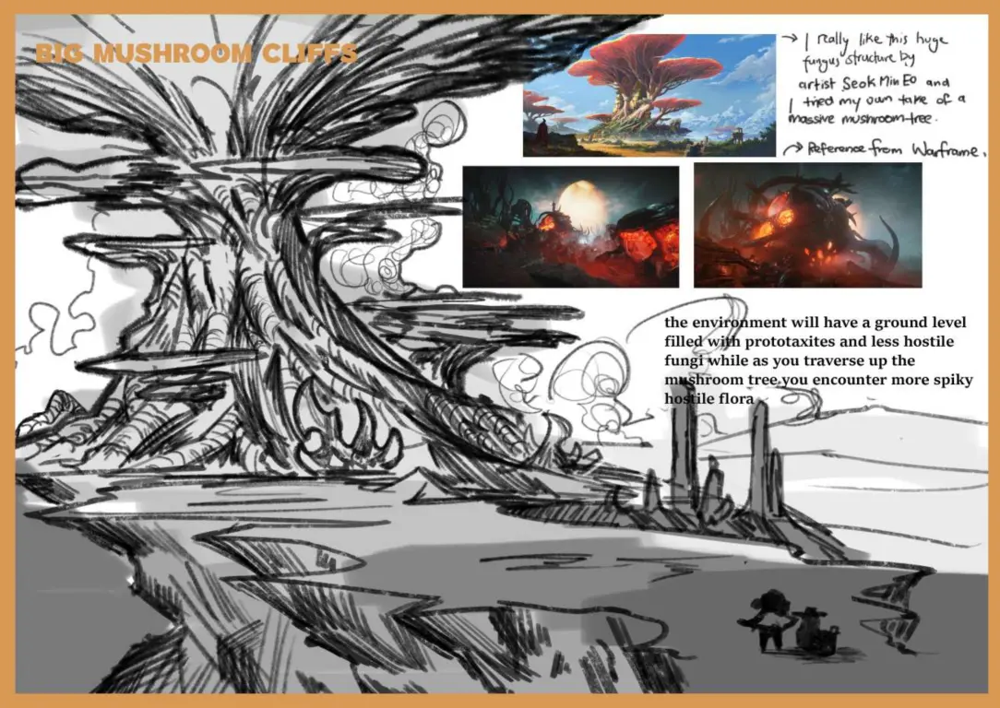
giant mushroom treesOne of the recognisable landmarks in the world are the huge mushroom trees. They serve as big focal points and in the game concept, serve as the main level the player traverses.
">Our protagonist - an unlucky space traveller has found themselves stuck in this unforgiving world. She is equipped with her spacesuit with a power glove. This allows her to use its functions to grapple and fire projectiles.
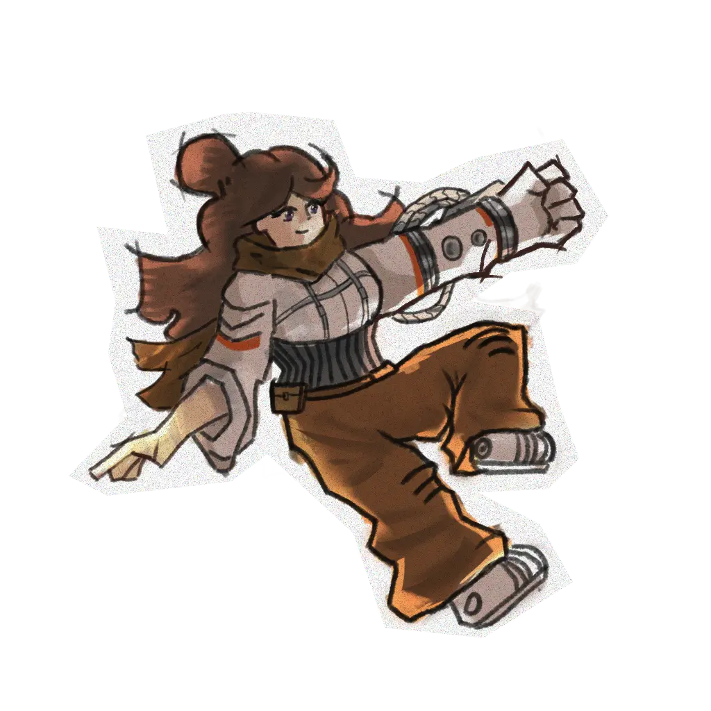
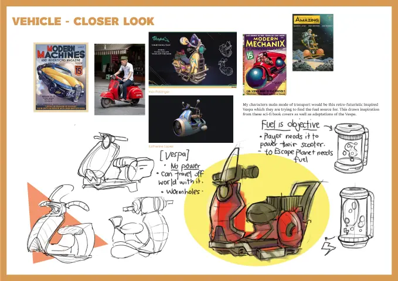
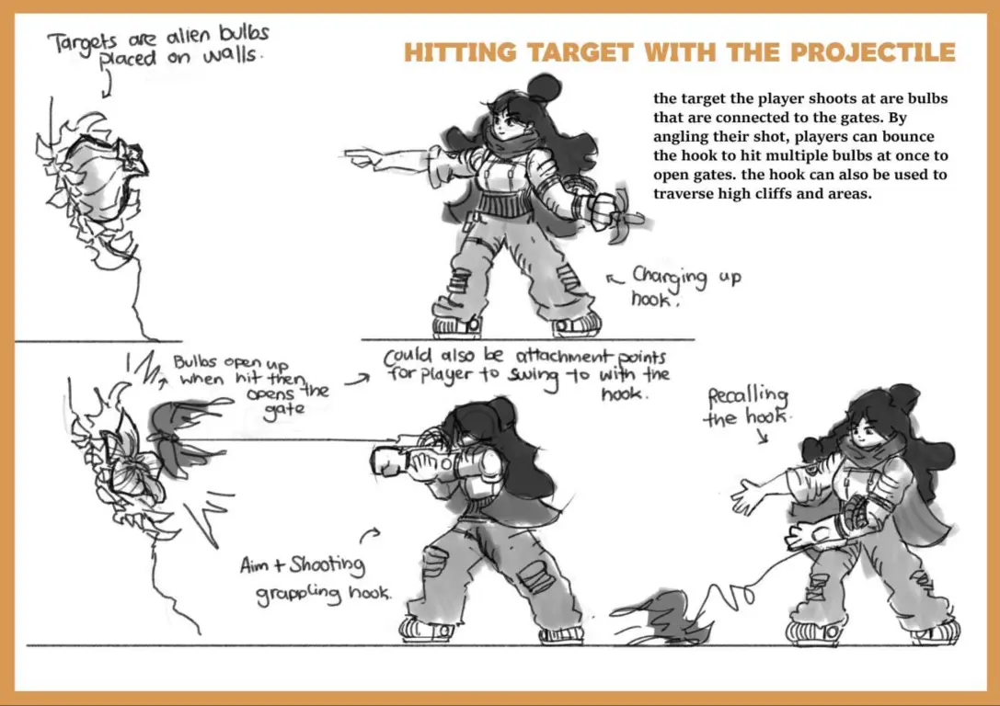
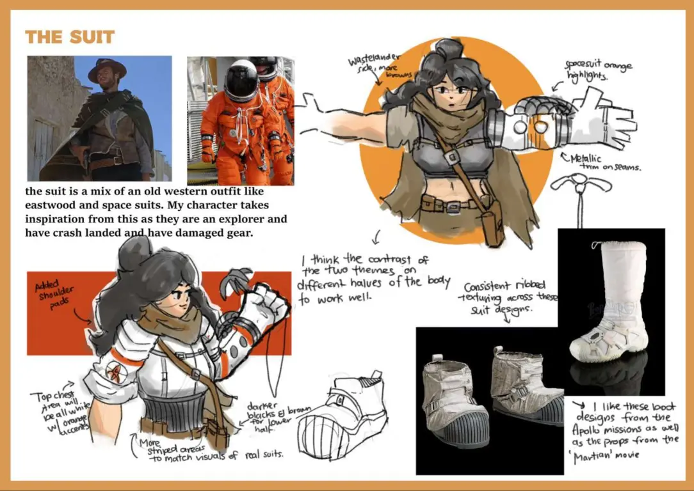
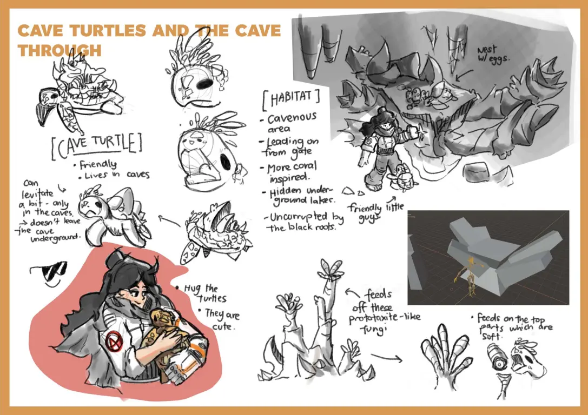
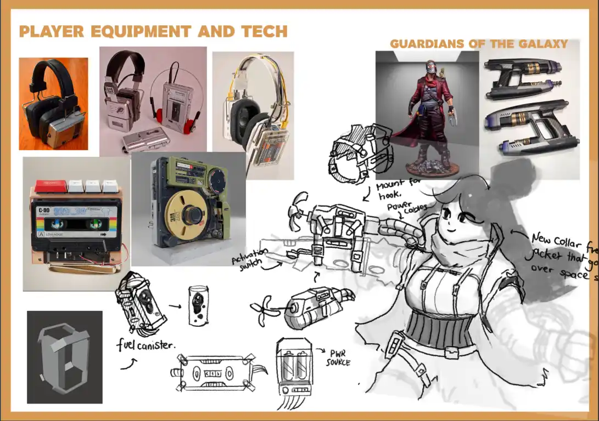